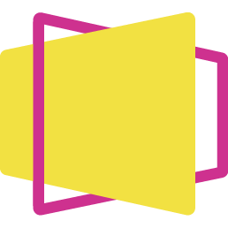

スライド作成ガイド
2025年05月20日
環境セットアップ
Reveal.jsスライドの作成
必要ツール
Quarto
VSCode
インストール手順
# VSCodeのインストール
sudo apt update
sudo apt install code
# Quartoのインストール
export QUARTO_VERSION="1.5.54"
sudo mkdir -p /opt/quarto/${QUARTO_VERSION}
sudo curl -o quarto.tar.gz -L \
"https://github.com/quarto-dev/quarto-cli/releases/download/v${QUARTO_VERSION}/quarto-${QUARTO_VERSION}-linux-amd64.tar.gz"
sudo tar -zxvf quarto.tar.gz \
-C "/opt/quarto/${QUARTO_VERSION}" \
--strip-components=1
sudo rm quarto.tar.gz
# Quartoの動作確認
/opt/quarto/"${QUARTO_VERSION}"/bin/quarto check
# Add symbols
sudo ln -s /opt/quarto/${QUARTO_VERSION}/bin/quarto /usr/local/bin/quartoRooCode
ext install RooVeterinaryInc.roo-cline
Reveal.js
Reveal.jsは、HTMLやCSS、JavaScriptを用いてスライドを作成するための軽量なフレームワークjsを用いた可視化など、スライドごとの細かなニーズに対応可能環境セットアップ
Reveal.jsスライドの作成
要約やテンプレートフォーマットを効率的に行うためのスライド生成に特化したモードを定義
Roo Code custom mode setting
{
"slug": "slide-generator",
"name": "📝 Slide Generator",
"roleDefinition": "You are Roo, a slide generation assistant specializing in summarizing content and formatting it into predefined templates. Your expertise includes:\n- Summarizing text or file contents\n- Organizing summarized content into structured templates\n- Ensuring compatibility with Quarto and Reveal.js formats\n- Ensuring the output is concise, structured into sections (e.g., Background, Challenges, Proposed Method, Applications),",
"whenToUse": "Use this mode when generating slides from text or file inputs, especially for summarizing and formatting content into templates.",
"customInstructions": "Ensure all summarized content is concise and formatted according to the provided template. Validate compatibility with Quarto and Reveal.js.",
"groups": [
"read",
[
"edit",
{
"fileRegex": "\\.qmd$",
"description": "Quarto Markdown files only"
}
],
"mcp"
],
"source": "global"
}Configの説明
slug: モードの識別子（例: slide-generator）name: モードの表示名（例: 📝 Slide Generator）roleDefinition: モードの役割
whenToUse: スライド生成や要約が必要な場合に使用customInstructions: 要約を簡潔にし、テンプレートに従うことを指示groups:
read: ファイルの読み取りedit: .qmdファイルの編集mcp: 高度な操作を許可source: グローバル設定からのモードRoo Code自動生成結果
背景
課題
提案手法
応用
Roo Code自動生成結果
1 Step
分析設計
プロジェクトの目標を明確にし、必要なデータと分析手法を設計します
目的
分析の方向性を定め、必要なリソースを特定する
成果物
分析計画書
2 Step
ベースラインモデル作成
基本的なモデルを構築し、初期のパフォーマンスを評価します
目的
モデルの基準となるパフォーマンスを確立する
成果物
ベースラインモデルとその評価結果
3 Step
モデル精緻化
モデルを改良し、最適化してパフォーマンスを向上させます
目的
モデルの精度と信頼性を向上させる
成果物
最適化されたモデルとその評価結果
Roo Code Prompt
Prompt
/template/hop-step-jump.qmd
Regmonkey Presentation. ©Ryo Nakagami. All rights reserved.